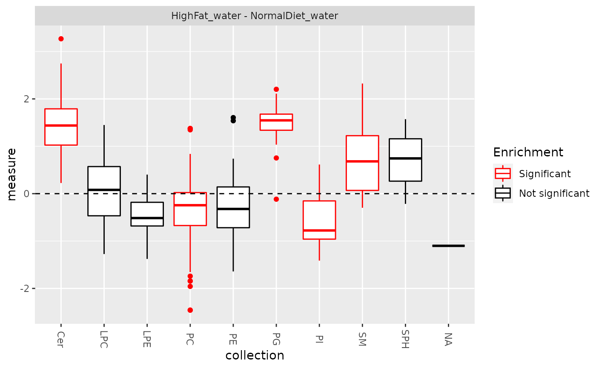
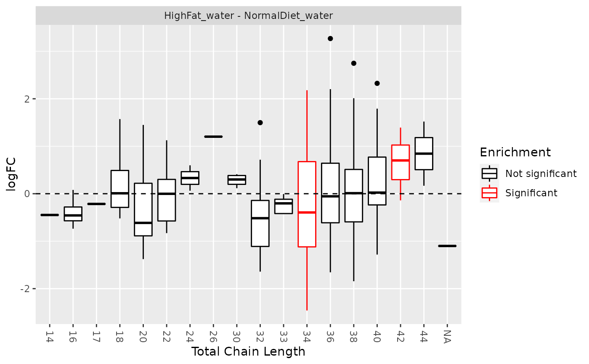

Lipid set enrichment analysis (LSEA)
lsea( de.results, rank.by = c("logFC", "P.Value", "adj.P.Val"), min_size = 2, ... ) significant_lipidsets(enrich.results, p.cutoff = 0.05, size.cutoff = 2) plot_class_enrichment(de.results, significant.sets, measure = "logFC") plot_enrichment( de.results, significant.sets, annotation = c("class", "length", "unsat"), measure = "logFC" )
| de.results | Output of |
|---|---|
| rank.by | Statistic used to rank the lipid list. Default is |
| min_size | Minimum number of molecules in a set to be included in enrichment. |
| ... | Extra parameters passed to |
| enrich.results | Output of |
| p.cutoff | Significance threshold. Default is |
| size.cutoff | Minimum number of lipids in a set tested for enrichment.
Default is |
| significant.sets | List of significantly changed lipid sets
(output of |
| measure | Which measure to plot the distribution of: logFC, P.Value,
Adj.P.Val. Default is |
| annotation | Which lipid set collection to plot. |
lsea returns enrichment results (data.frame) as returned from
fgsea::fgsea().
The results also contain the following attributes:
de.results Original de.results input.
rank.by Measure used to rank lipid molecules.
sets Lipid sets tested, with their member molecules.
significant_lipidsets returns a list of character vectors of
significantly enriched sets for each contrast.
plot_enrichment returns a ggplot object.
significant_lipidsets: gets a list of significantly changed lipid sets
plot_enrichment: is usually used to look at log2 fold change
distribution of lipids in each class, chain length or unsaturation,
marking significantly enriched sets. It can also be used to plot P.Value
or Adj.P.Val.
data(data_normalized) de_results <- de_analysis( data_normalized, HighFat_water - NormalDiet_water, measure = "Area" ) enrich_results <- lsea( de_results, rank.by = "logFC", min_size = 4, nperm = 1000 )#> Warning: There are ties in the preranked stats (5.78% of the list). #> The order of those tied genes will be arbitrary, which may produce unexpected results.#> Warning: For some pathways, in reality P-values are less than 1e-10. You can set the `eps` argument to zero for better estimation.sig_lipidsets <- significant_lipidsets(enrich_results) plot_enrichment(de_results, sig_lipidsets, annotation="class")plot_enrichment(de_results, sig_lipidsets, annotation="length")